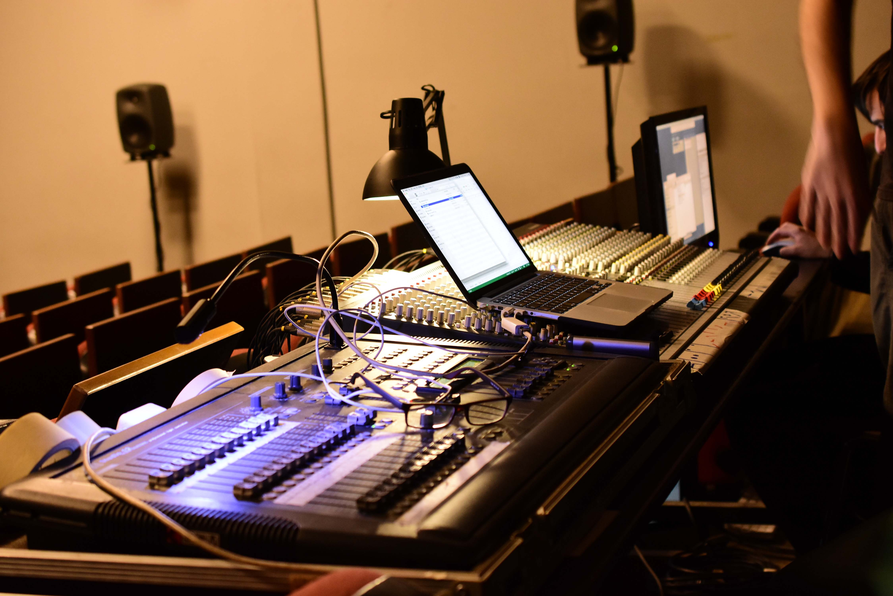

How to be a good Sound Engineer.
For be a good sound engineer we need to study hard.
An audio engineer (also sometimes recording engineer or a vocal engineer) helps to produce a recording or a performance, editing and adjusting sound tracks using equalization and audio effects, mixing, reproduction, and reinforcement of sound. Audio engineers work on the "...technical aspect of recording—the placing of microphones, pre-amp knobs, the setting of levels. The physical recording of any project is done by an engineer ... the nuts and bolts."[1] It's a creative hobby and profession where musical instruments and technology are used to produce sound for film, radio, television, music, and video games.[2] Audio engineers also set up, sound check and do live sound mixing using a mixing console and a sound reinforcement system for music concerts, theatre, sports games and corporate events. Alternatively, audio engineer can refer to a scientist or professional engineer who holds an engineering degree and who designs, develops and builds audio or musical technology working under terms such as acoustical engineering, electronic/electrical engineering or (musical) signal processing.[3]